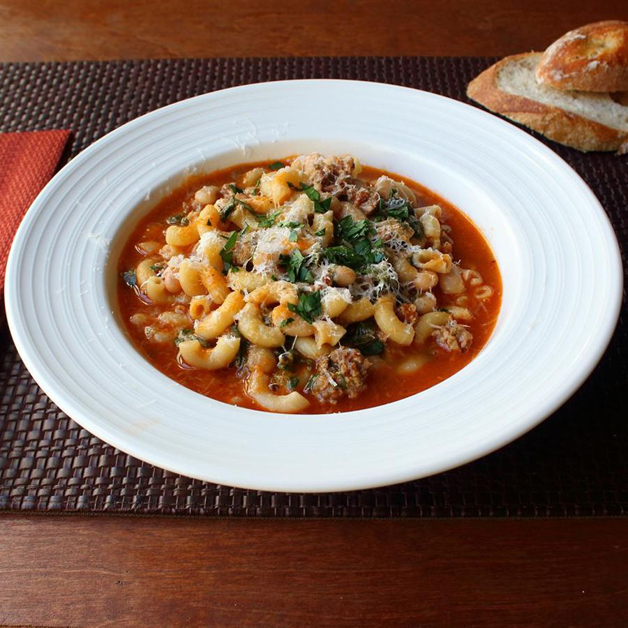

PASTA

~ Pasta?? ~
Where flour transforms into ribbons of culinary bliss, inviting you on a journey of taste and texture with every savory bite.
~ Ingredients ~
- Flour of Wonder: The cornerstone, transforming into silky strands or comforting shapes with each knead and roll.
- Liquid Ambrosia (Water): A humble yet essential component, binding flour into a doughy masterpiece.
- Eggs of Elegance: Rich and velvety, they impart a golden hue and a luxurious texture to certain pasta varieties.
- Seasoning Symphony (Salt): Elevating flavors, balancing tastes, and ensuring each bite is perfectly seasoned.
- Saucy Inspiration: From zesty marinara to creamy Alfredo, a harmonious partner that completes the pasta experience.
- Cheese Charisma: Whether grated Parmesan or crumbled feta, adding a touch of cheesy delight to every dish.
- Herbal Enchantment: Fresh basil, oregano, or parsley, infusing each bite with aromatic bliss and vibrant color.
~ I want to make it ~
- Summon the Flour of Wonder: Measure out the flour, the very essence of pasta magic, onto a clean surface, ready to be transformed.
- Invoke Liquid Ambrosia: With a steady hand, add water to the flour, blending it into a cohesive dough, each drop binding the elements together.
- Embrace Eggs of Elegance: For an extra touch of luxury, incorporate eggs into the mixture, whisking them in with finesse until the dough glistens with golden promise.
- Seasoning Symphony: Sprinkle salt into the mixture, allowing it to dance with the other ingredients, balancing flavors and enhancing the pasta's essence.
- Knead with Passion: With the strength of determination and the tenderness of an artist, knead the dough until it becomes smooth and elastic, a testament to your dedication.
- Shape and Form: Let your creativity flow as you shape the dough into various forms - ribbons, tubes, or spirals, each telling a story of its own.
- Boil to Perfection: In a bubbling cauldron of water, immerse the pasta, watching with anticipation as it cooks to al dente perfection, ready to be bathed in sauce.
- Coat with Saucy Inspiration: Toss the cooked pasta in your chosen sauce, ensuring each strand is thoroughly coated, ready to deliver a burst of flavor with every forkful.
- Garnish with Cheese Charisma: Sprinkle grated cheese over the pasta, letting it melt into a creamy blanket of indulgence, adding depth and richness to each mouthful.
- Final Herbal Flourish: Scatter fresh herbs over the dish, a vibrant finale that elevates the flavors and adds a touch of visual elegance.
- Serve with Pride: Present your masterpiece to eager diners, a testament to your culinary prowess and a celebration of the art of pasta-making.
Hmm that's it